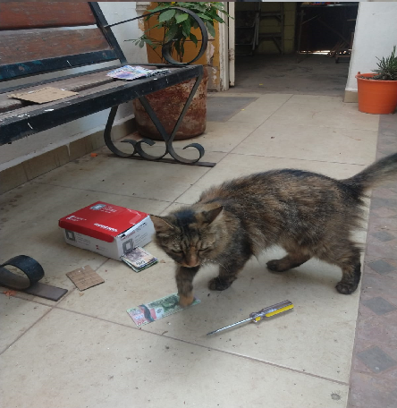

Las elecciones 2024 han terminado y ganando Cocoa Alvarez Maynez 02/6/2024
el presidente de la republica Cocoa Alvarez Maynez hace un tratado de seguridad con el presidente de la fabrica industral LaFerre para poner mas seguridad dentro de la fabrica poniendo en marcha El plan de seguridad industrial contratando un equipo de seguridad para cuidar la fabrica industrial LaFerre el costo para contratar estos profecionales durante 59.7 meses fue de 3.58 millones de pesos. No tenemos detalles pero sabremos que sera un equipo grande con mas de 500 miembros para cambiarlos cada dia asegurandose que no los sobornen.
El presidente de la Republica Cocoa Alvarez Maynez le cambia el nombre a el Gobierno del Porche a "La Republica Sociodemoratica de la Sagrada Gema Blanca
Este 08/07/2024 la ladrona profesional conosida como la fugitiva se moviliso de nuevo robando una caja automatica serca de Palacio Nacional la fugitiva sige suelta en las calles si la ve reportela imediatamente
a continuacion la evidencia:

Informacion hacerca de "la fugitiva": no tenemos el nombre pero sabemos que tiene 3 años humanos vino de una familia desconocida pero se sabe que se fue con todos los ahorros de esta familia y se gana la vida cometiendo este tipo de crimenes en el segundo robo trato de robar una pintura pero fue detenida en el proseso y por un robo menor a una tienda se le condeno a 3 años de prision pero se escapo 6 meses despues de su encierro hay rumores de que tiene secuases que bloquean las camaras de seguridad hackeandolas es muy sigilosa y aun asi la vieron 4 veces el mismo dia y una camara le tomo una foto despues de eso desaparecio sin dejar rastro se dice que roba para comprar arte pero no esta confirmado otros dicen que les da la comida a los pobres pero tampoco esta confirnado tambien intento robar la bandera nacional pero fallo y fue condenada a cadena perpetua pasaron 13 años gatunos interrogandola hacerca de por que robaba pero nunca hablo y despues de quince años gatunos escapo y dos dias despues robo el cajero automatico de ahora apesar que es la mas sigilosa del pais aun asi la vieron 4 veces y eso que el robo fue cometido a altas horas de la mañana la imagen solo tiene mucho brillo